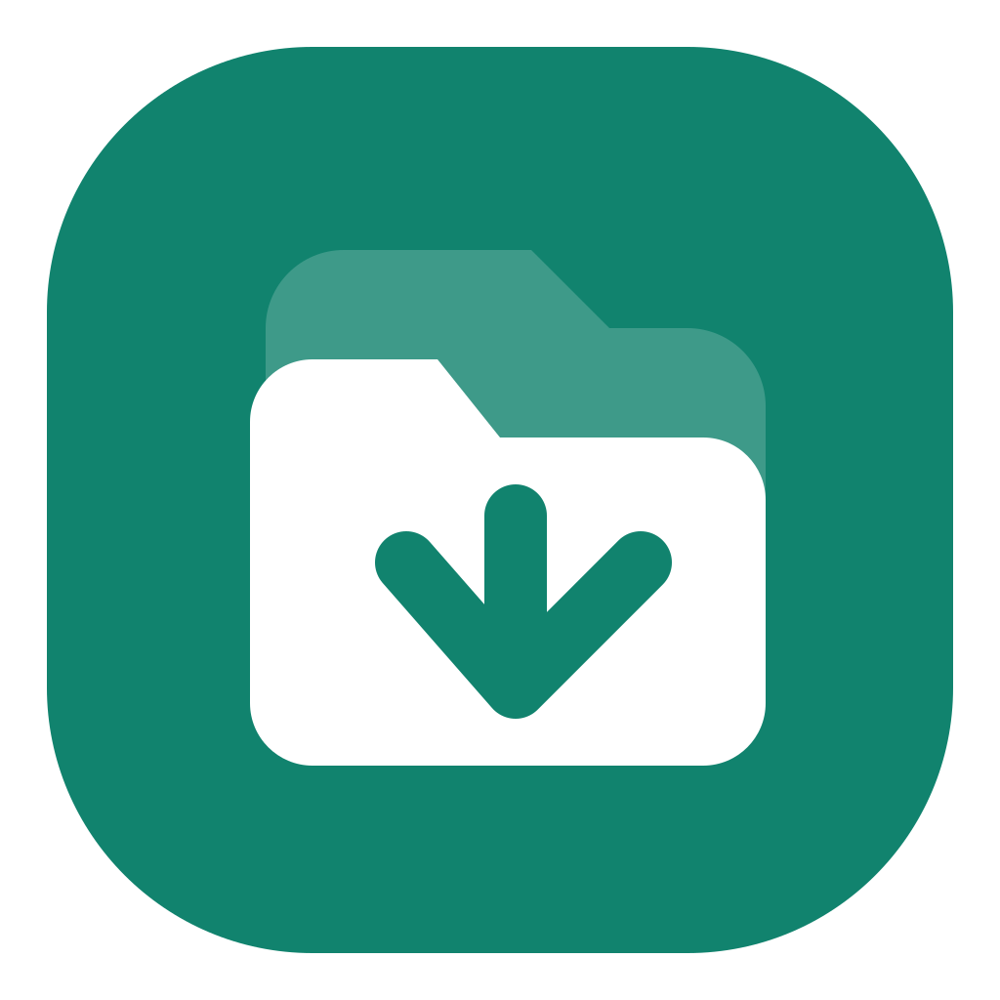
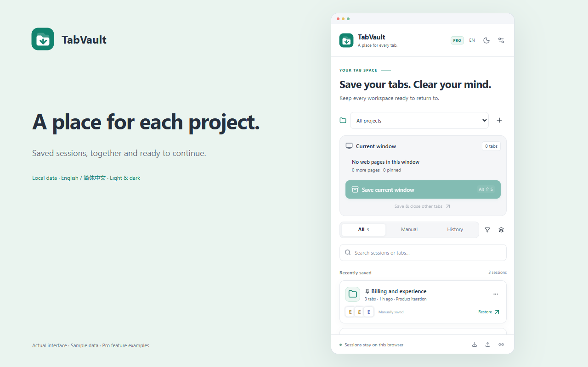

Save your workspace
Save the HTTP/HTTPS tabs in a window, including repeated URLs and pinned tabs.

TabVaultSave a workspace. Return when you’re ready. Keep your tabs together, so your next session starts with a clear mind.
Chrome 116+ · Local storage · No account required

Save the HTTP/HTTPS tabs in a window, including repeated URLs and pinned tabs.
Pro organizes sessions by project and restores browser groups, with a choice of individual tabs.
Optional local snapshots: Free keeps 3 recent versions. Pro retains up to 30 days, 500 snapshots and 4 MB.
English by default. 简体中文 when you want it.
Light, dark, or follow your system.
Sessions, snapshots and preferences stay in your browser. Automatic backup is off by default. It can restore content present in an existing snapshot. No developer analytics.
Privacy policy